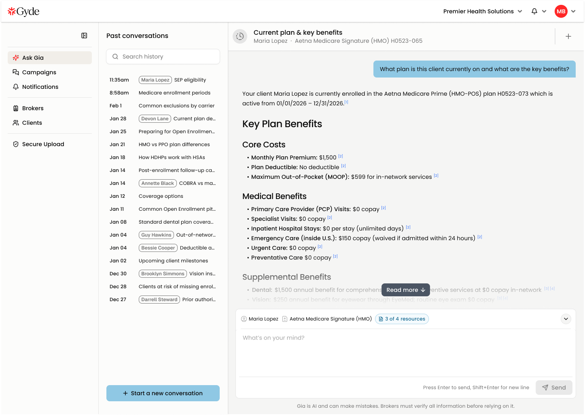
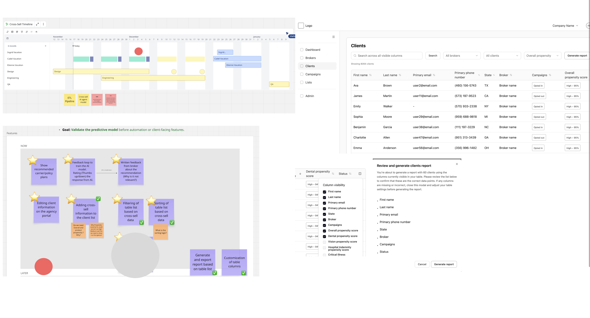
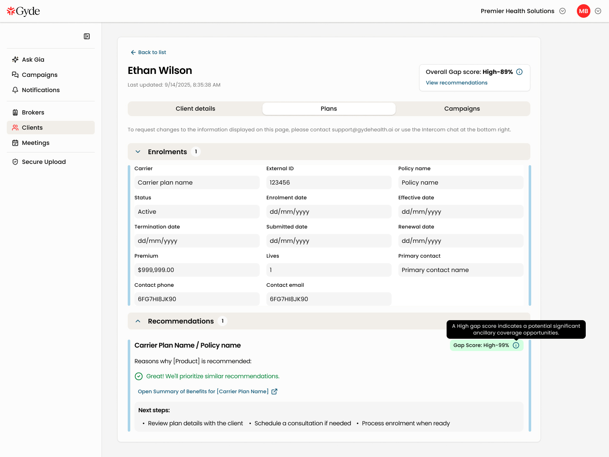
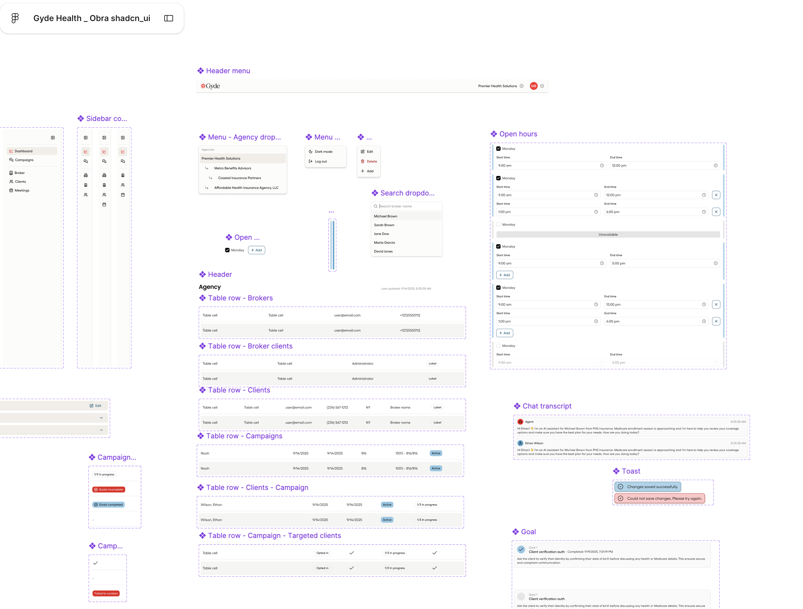

002 — AI Powered Insurance Brokerage · B2B
Helping Insurance Brokers Grow Revenue with AI
Designed AI-powered workflows that helped insurance brokers identify cross-selling opportunities, review member data faster, and make confident recommendations.

Overview
A platform built around AI-powered recommendations
GYDE Health is an AI-powered platform that helps insurance brokers identify overlooked opportunities across employee benefits. Instead of manually reviewing complex member data, brokers receive AI-assisted recommendations that accelerate decision-making.
Representative workflow from the GYDE Health platform. Sensitive client information has been anonymized and modified for confidentiality. Click any image to explore it in detail.
The Opportunity
Brokers were leaving revenue on the table
Insurance brokers spent hours reviewing fragmented data across multiple employer groups. Valuable cross-selling opportunities often went unnoticed because the information was difficult to interpret quickly.
The challenge
"How might we surface meaningful opportunities before brokers even begin searching?"
Research & Insights
Understanding the broker's workflow
I ran stakeholder workshops, broker interviews, journey mapping, and existing workflow analysis to understand how brokers actually work. Three core insights drove the design:
01
Pain points
Brokers were sceptical of black-box AI. Recommendations needed to show their reasoning, why this client, why now.
02
Business opportunities
Creating a targeted outreach campaign took hours. Brokers needed a workflow that could take them from insight to send in minutes.
03
AI opportunities
Most brokers had no visibility into which campaigns performed. Closing the feedback loop was as important as launching campaigns.

Journey map and research board mapping the end-to-end broker workflow.
Designing Trust Into AI
AI recommendations are only valuable when users understand why they exist
We designed every recommendation to be explainable, reviewable, and editable before taking action.
Recommendation cards
Every suggestion pairs the recommendation with the data behind it, so brokers can verify before acting.
Confidence indicators
A visible confidence score sets expectations and helps brokers prioritize which opportunities to act on first.
Human review
Feedback collection lets brokers flag inaccurate recommendations, improving the model and building trust over time.

The recommendation experience — explanation panels and conversation flow for reviewing AI reasoning.
From Insight to Action
Guiding brokers through action, not just recommendations
Instead of only showing recommendations, the platform guides brokers through taking action immediately — from opportunity details to a ready-to-send campaign.
Opportunity details
Employer profile and AI summary surfaced together, so brokers have full context in one view.
Suggested next steps
Clear, ranked actions remove the guesswork of what to do with a recommendation.
Campaign builder
Turns an approved recommendation into an outreach campaign in a few clicks.
Representative workflow from the GYDE Health platform. Sensitive client information has been anonymized and modified for confidentiality. Click any image to explore it in detail.
AI Workflow
AI accelerated the process, not the decisions
AI helps me research faster, prototype quickly and explore more ideas. Every product decision is still guided by user needs, stakeholder alignment, engineering constraints and business goals.
Research
Understand the problem before opening Figma.
AI Exploration
Use AI to accelerate research, challenge assumptions and generate multiple directions.
Rapid Concepts
Create low and high fidelity concepts quickly and explore multiple solutions.
Stakeholder Alignment
Present concepts, discuss trade-offs and refine ideas with product and business teams.
Engineering Validation
Review feasibility, edge cases and technical constraints with developers.
Design System
Create reusable components, improve existing patterns and document decisions.
Delivery
Prepare production-ready files, documentation and developer handoff.
Design System
Building consistency while moving fast
As new AI experiences were introduced, I expanded the Design System with reusable components, interaction patterns, and documentation to help engineering deliver consistently.

Component library, tokens, new components, variants, and documentation. Click to expand.
Impact
What changed for brokers
Next Steps & Learnings
What I took away
AI works best when it explains itself
For AI in professional contexts, showing the reasoning behind a recommendation is as important as the recommendation itself. Users adopted the tool faster when they could see why.
Enterprise AI succeeds through trust, not automation
Brokers measured success in time saved, but only once they trusted the reasoning behind each suggestion. Trust had to be designed for, not assumed.
Great AI experiences are designed with engineering, not after engineering
Looping in engineering during exploration, not just at handoff, kept the recommendation model's real constraints part of the design from day one.
Great products
don't happen by accident.
Let's build one together.
Whether you're hiring, building, or simply exchanging ideas, my inbox is always open.